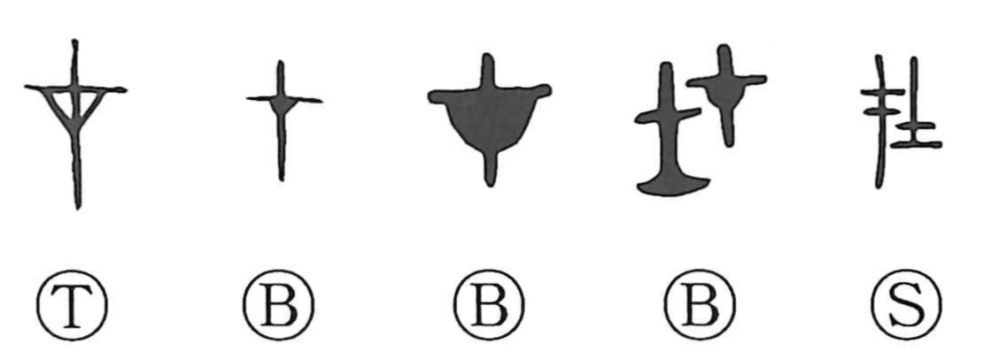

在

Kun: aru, oru | On: zai, sai
to exist ・ to be ・ to be present ・ to be located
Explanation
在 combines 才 with 士. 才 pictures a marker post with a small crosspiece, to which a vessel containing a prayer was attached. Erecting this sign consecrated the place: the divine power was established there, and the place existed under its protection. 才 is the earlier graph for 在.
士 represents the head of a small broad-axe, a sacred implement. Added to the marker, it guards and confirms the consecrated presence and the authority exercised over that place. 在 originally means to be there as something sacred.
The meaning broadens to being present at a particular place or time, for a thing or a person. The related 存 adds a child to 才 and concerns a life secured through the same sanctifying act.